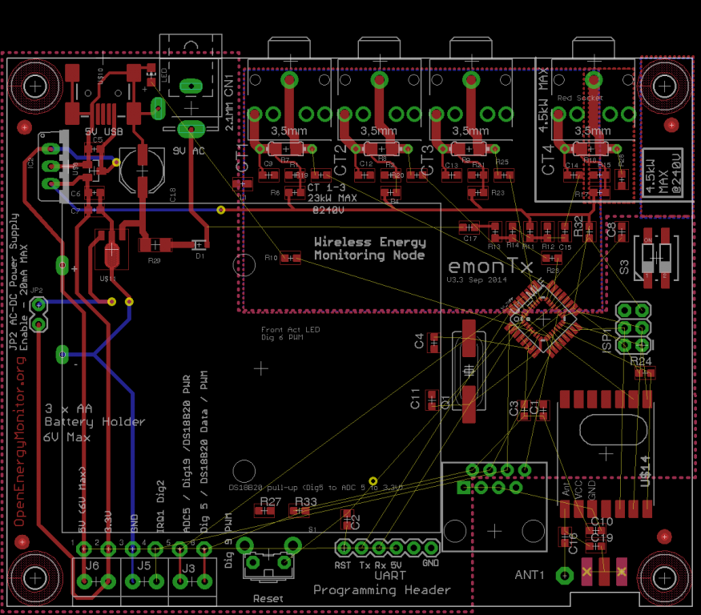

Hello everyone,
We're currently working on a minor update to the emonTx V3.
The main changes planned are so far are:
- Laying down ATmega328 directly on the board as opposed to using RFu328, will make manufacture easier and allow support for RFm69CW using standard JeeLib library
- Adding RJ45 temperature monitor connection to allow for easy connection of bus-string of DS18B20 temperature sensors for applications like heatpump monitoring. The Terminal block will stay and it's also easy to breakout the RJ45 onto terminal block using adapter in the shop [LINK] or connect in a DS18B20 ready-made with RJ45 connector, also in shop [LINK].
I don't want to add features users don't want or wont use so here are a couple of things I would be interested to hear your thoughts on:
- DIP switches for quick node ID selection: 4-pole DIP switch to allow for 4 node ID selections to make adding an extra emonTx to your network quick and easy? Under £0.30 cost in quantity
- Battery monitor – adding a voltage divider into an ADC to allow for monitoring of 3 x AAA battery voltage?
- Battery options – add lithium charge control circuit and connector to connect lithium battery back instead of 3 x AAA.?
I keep swinging back and fourth on battery options, I think most users opt for using AC-AC adapter to power the unit as opposed to batteries since this gives more accurate Real Power measurements.
I would be interested to hear if you have any features or changes which you would like in the revision (dubbed V3.3 at the moment)?
This is what the board looks like so far:
{kind=link}

Re: emonTx V3 New Version Development
There seems to be an ongoing trickle of interest for a serial connection to a RPi or whatever. Is it worth making provision on the PCB for a header/connector to be fitted? This might also facilitate interconnection of three emonTx's for 3-phase installations (like MartinR's stacked V2s - unless you have a 3-phase version of the emonTx in mind - and I'm sure there's a market for that!)
What is the position regarding the aerial connector and the radio module? Questions were asked about the impedance matching of the link to the SMA connector on the V3.2 PCB. It's all a black art to me, all I know is it looks like a stripline and you can tailor the impedance thereof with the interaction between the dimensions and the PCB properties. How to do it, I don't know.
Node ID switch: How does that stack up against offering a custom-programmed V3? (i.e. the cost to re-program one prior to dispatch?) It's probably no less valid to ask for a 120/240 V switch as well.
What about a cut-able link to disconnect the 22 Ω burden resistors for those that want to substitute a higher value through-hole component for increased sensitivity?
And what's the betting that someone who sees the RJ45 connector will want Ethernet on it!
Re: emonTx V3 New Version Development
Hi Robert,
Thanks for your thoughts.
I think the RPi connections you talk about are already available in form of the UART connection (Vdd, GND, Tx, Rx), as shown in the post: http://openenergymonitor.blogspot.com/2014/03/direct-connection-emontx-v3-raspberry.html. Any further integration with the RPi can be handled by the emonPi Raspberry Pi shield.
Antenna matching is not something I am overly versed in either, I am aware that the current V3 with Rfu328 and RFM12B is not optimal. The antenna trace has to pass through several PCB connections and traces before reaching the whip / SMA ant. As far as I understand an optimal setup would be for the RF module ant pin to go directly onto the SMA pin but PCB layout constraints often necessitate a short PCB trace which should be as wide as straight as possible and be around 50 ohms to match the SMA connector (need to try and calculate this, although it will change depending on PCB manufacture and FR4 material). For the V3.3 design I've changed the SMA connector to an edge mounted unit which is lower cost and lower RF loss (no 90 degree bend reflections). I'm keen to keep option for a wire whip to keep cost down, in-order to allow for either wire-whip or SMA option I'm using a low value cap as a link, the idea is that either C16 or C19 is placed on the board (not both) to allow for selection between the two. The low value cap (exact value to be decided, I plan to start with 22pF as this value is already used on the board). As well as working as a link the low value cap will provide another DC block for ESD directly into the antenna. I would be interested to hear if someone with more RF knowledge can validate my assumptions.
Jury is still out on DIP node ID selection switch. Yes it would be relatively easy to ship with node ID's ready set but a switch gives the user flexibility and gives option to more easily sell through distributors or installers.
Regarding 110V operation, have you heard much feedback from users who are using the new USA AC-AC plug adapter from the shop? Have calibration values been floated? This is something which is difficult for us to test and calibrate without a 110V system.
cut-able track is a good idea but it could be easier just to remove the SMT resistor , they flick off quite easy with a soldering iron giving way for thru-hole.
Indeed, RF45 will inevitably be mistaken for Ethernet! No damage should happen if this mistake is made. I'll try and make it clear!
Re: emonTx V3 New Version Development
For me battery monitor and temperature sensor inputs are the most useful new features, in this order
:-)
Re: emonTx V3 New Version Development
My wish list :
- RJ45 input connection for temperature AND pulse. The block port we have now is uneasy.
- being able to interconnect several emonTx by wire and use a single RF module(like here). It would be very interesting when using many many emontx in the same place. Now, we have data collisions whereas a RF connection is not needed in most of case. Moreover, it will decrease the total price for this kind of application. See discussion here.
In a ideal world, the interconnected TX could share a single AC-AC adapter and could handle 3-phase but I guess it would need some big changes in the emonTX V3 design.
- DIP switch to select the nodeID.
- a switch to make the CT4 work like the others one.
Regard,
Eric
Re: emonTx V3 New Version Development
Hi Eric and Berna
Thanks for your comments
RJ45 temperature and pulse counting, battery monitoring and node ID dip switches are all included in updated design :-)
emonTx's can be joined using RX and TX broken out on the UART header.
V3.3 prototype routing is coming together:
Re: emonTx V3 New Version Development
Eric:
There's a problem with using one ac-ac adapter for multiple emonTx's - the current drawn from the ac adapter to operate the emonTx has been kept to an absolute minimum so that it does not spoil the wave shape for measurement. You could certainly use a common ac adapter provided that the operating power came from a common 5 V dc supply, and kept the ac adapter only for measuring the voltage. But that would not help in a 3-phase installation, you would still need three adapters for best accuracy.
Re: emonTx V3 New Version Development
Thank you Robert for clarifying that point.
It brings me some new questions here.
Eric
Re: emonTx V3 New Version Development
Quick update, prorotype has been assembled and all seems to be working as expected :-)
New fascia for the case has been designed and proto laser cut and fits well.
BOM has been set off to suppliers and manufactures for quote.